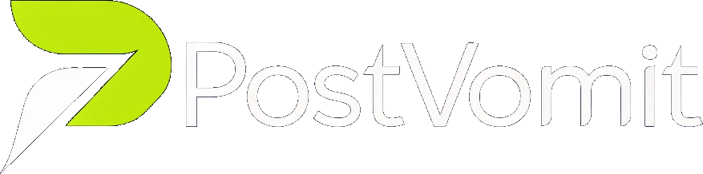
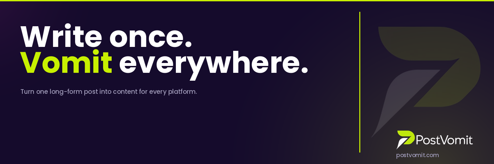

Everything you need to represent PostVomit consistently across every surface.
Use the appropriate variant based on background context. Always maintain clear space around the logo equal to the height of the "P" icon.


Three colors do all the work. Navy grounds everything. Lime is the hero. Pink is reserved for moments that need edge.
Nunito is the primary typeface — rounded, friendly, and confident. Available free via Google Fonts.
PostVomit doesn't take itself too seriously — and that's the point. Irreverent but smart. Direct but never cold.
PostVomit knows what it does and doesn't hedge. Short sentences. Active verbs. No filler. "Write once. Vomit everywhere." Not "PostVomit helps you create content more efficiently."
The name is PostVomit. Lean into it. The brand has permission to be funny, blunt, and a little gross — in a way that makes creators feel seen, not alienated.
Creators don't have time for fluff. Get to the point. Lead with what the product does. Benefits first, features second. "4 platforms. One paste." not "Our AI-powered multi-platform distribution engine..."
Anyone who creates content is a creator — writers, coaches, founders, podcasters, chefs. The voice is broad enough to speak to all of them without being watered down.
Keep the brand clean and consistent across every touchpoint.